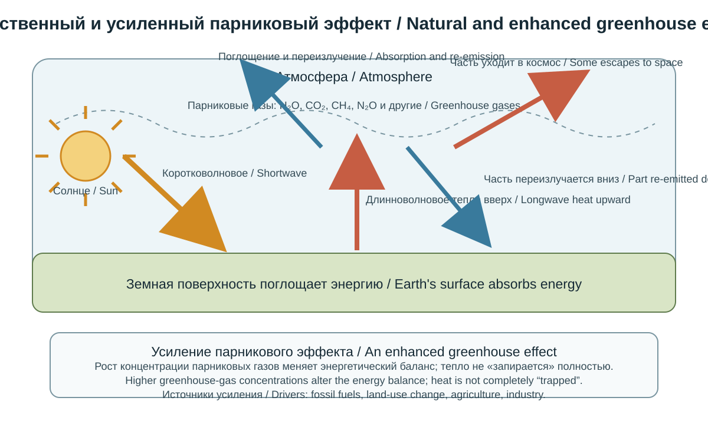
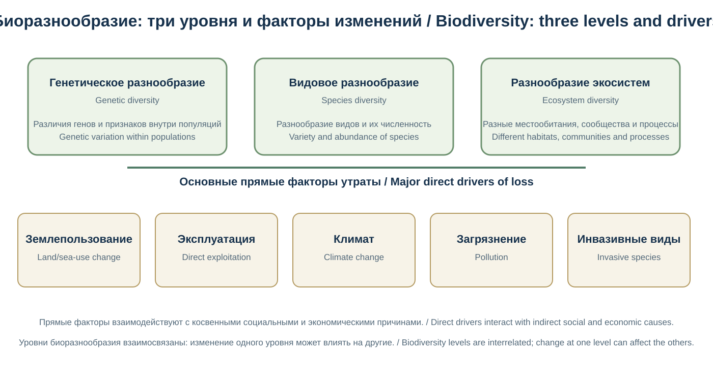
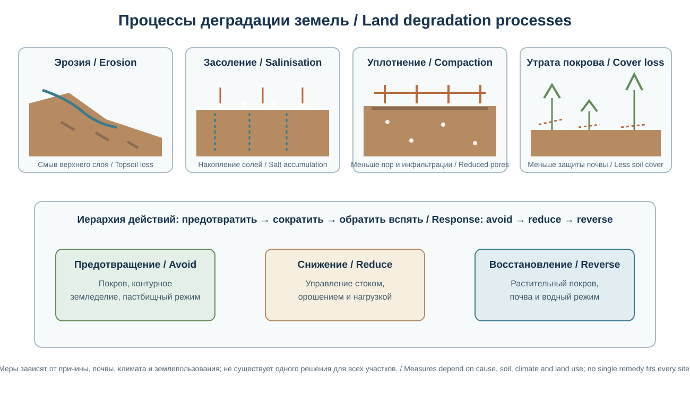
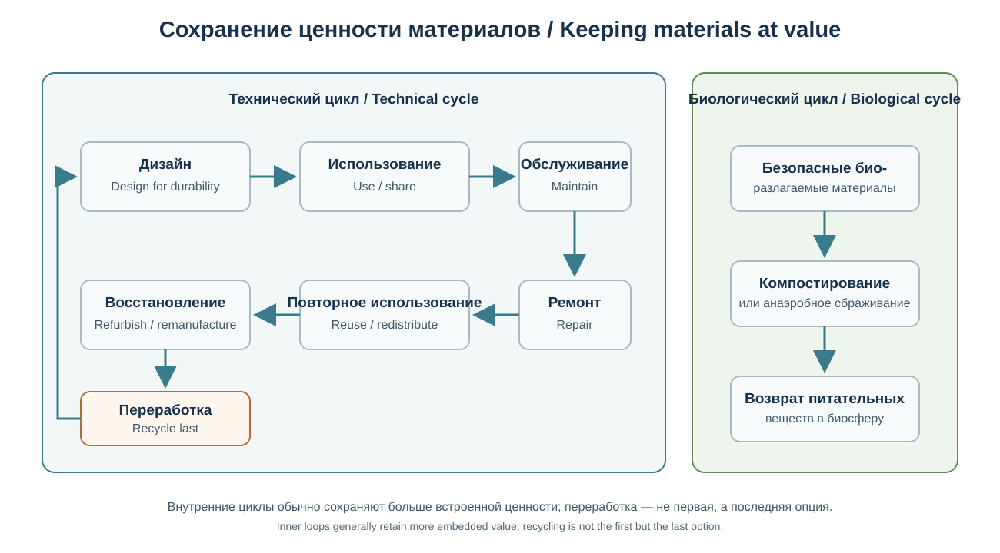
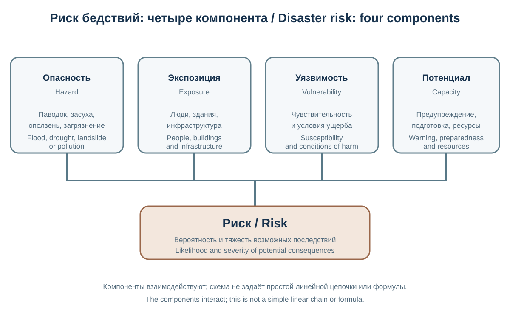
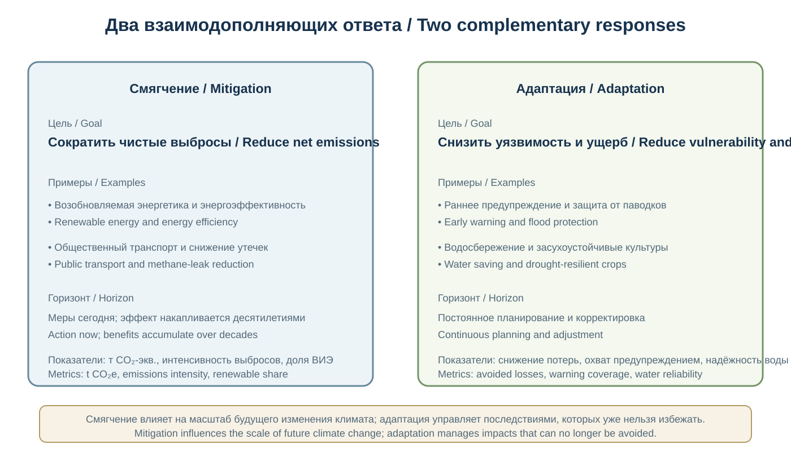
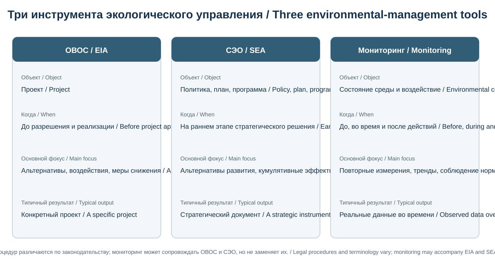
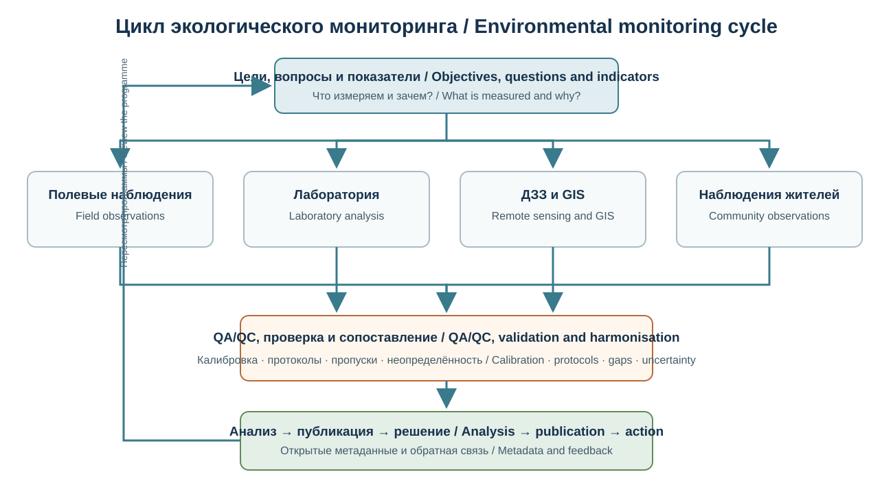
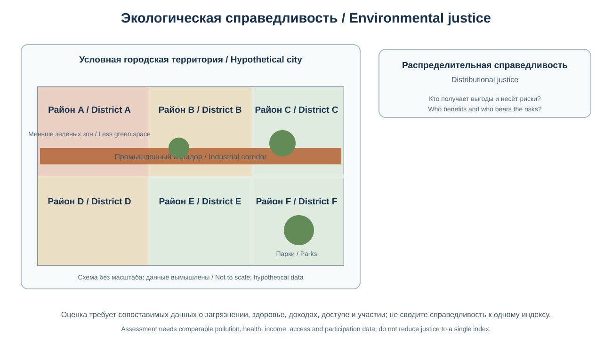

Глава 13. Экология и глобальные изменения
Chapter 13. Ecology and Global Change
Часть III. Современная география и технологии / Part III. Modern Geography and Technology
Научно-образовательный атлас географии / Scientific and Educational Geography Atlas
Цели главыChapter objectives
Экологическая география исследует пространственные закономерности взаимодействия общества и природных систем, распределение экологических рисков и последствия хозяйственной деятельности. Глобальные изменения включают не только изменение климата, но и преобразование землепользования, утрату биоразнообразия, изменение круговоротов веществ, загрязнение и трансформацию океана.
Глава знакомит с основными понятиями экологии, географией антропогенного воздействия, климатическими и биосферными изменениями, экологическими рисками, инструментами оценки и принципами устойчивого развития.
Environmental geography examines the spatial patterns of interactions between societies and natural systems, the distribution of environmental risks and the consequences of human activities. Global change includes not only climate change but also land-use transformation, biodiversity loss, altered biogeochemical cycles, pollution and ocean change.
This chapter introduces core ecological concepts, the geography of human pressures, climate and biosphere change, environmental risks, assessment tools and principles of sustainable development.
13.1. Экология и экологическая географияEcology and Environmental Geography
Экология — наука о взаимодействиях организмов между собой и с окружающей средой. Она рассматривает процессы на уровнях организма, популяции, сообщества, экосистемы и биосферы.
Экологическая география изучает пространственную организацию этих процессов и их связь с природными и социально-экономическими условиями. Она объединяет подходы физической географии, биологии, геологии, экономики, социологии, демографии и наук об окружающей среде.
Основные направления: - экология популяций и сообществ; - экосистемная и ландшафтная экология; - биогеохимические циклы; - география загрязнения и экологических рисков; - охрана природы и восстановление экосистем; - экологическая оценка хозяйственной деятельности; - климатическая адаптация и устойчивость территорий.
Экологические проблемы имеют разные пространственные масштабы. Локальное загрязнение воздуха может воздействовать на городской район, речное загрязнение — распространяться по всему бассейну, а изменение климата — влиять на природные и социальные системы глобально.
Ecology is the science of interactions among organisms and between organisms and their environment. It studies processes at the levels of individual organisms, populations, communities, ecosystems and the biosphere.
Environmental geography examines the spatial organisation of these processes and their relationships with natural and socioeconomic conditions. It brings together approaches from physical geography, biology, geology, economics, sociology, demography and environmental science.
Its main fields include: - population and community ecology; - ecosystem and landscape ecology; - biogeochemical cycles; - the geography of pollution and environmental risks; - nature conservation and ecosystem restoration; - environmental assessment of economic activity; and - climate adaptation and territorial resilience.
Environmental problems occur at different spatial scales. Local air pollution may affect an urban district, river pollution may spread throughout a catchment, and climate change affects natural and social systems globally.
13.2. Экосистемы, устойчивость и экологические функцииEcosystems, Resilience and Ecological Functions
Экосистема включает живые организмы, физическую среду и потоки энергии и вещества между ними. Её функционирование зависит от продуктивности, пищевых сетей, разложения органического вещества, водного режима, почвенных процессов и биоразнообразия.
Устойчивость экосистем (resilience) — способность системы поглощать возмущения, перестраиваться и сохранять основные функции. Она не означает неизменность: экосистемы динамичны, а при превышении определённых порогов могут переходить в другое состояние.
Следует различать: - сопротивляемость: насколько мало система меняется под воздействием; - восстановление: насколько быстро она возвращается к прежнему состоянию; - адаптивную способность: возможность изменять структуру и процессы, сохраняя ключевые функции; - трансформационную способность: возможность перейти к новому устойчивому состоянию, когда прежнее становится нежизнеспособным.
Экосистемные услуги — выгоды, которые люди получают от природы. В классификации Millennium Ecosystem Assessment выделяют обеспечивающие, регулирующие, культурные и поддерживающие услуги. В современной системе IPBES также используется понятие вкладов природы в жизнь людей, позволяющее учитывать разнообразие мировоззрений и ценностей.
An ecosystem includes living organisms, the physical environment, and the flows of energy and matter between them. Its functioning depends on productivity, food webs, the decomposition of organic matter, water regimes, soil processes and biodiversity.
Ecosystem resilience is the ability of a system to absorb disturbances, reorganise and retain its essential functions. It does not mean that the system remains unchanged: ecosystems are dynamic, and when certain thresholds are exceeded they may shift into another state.
It is useful to distinguish: - resistance: how little a system changes under pressure; - recovery: how quickly it returns towards its previous state; - adaptive capacity: the ability to change structure and processes while retaining key functions; and - transformative capacity: the ability to move into a new viable state when the previous one is no longer sustainable.
Ecosystem services are the benefits people obtain from nature. In the Millennium Ecosystem Assessment classification, they are grouped into provisioning, regulating, cultural and supporting services. The IPBES framework also uses the concept of nature's contributions to people, which recognises a wider diversity of worldviews and values.
13.3. Антропогенное воздействие и планетарные измененияHuman Pressures and Planetary Change
Хозяйственная деятельность преобразует природные системы через землепользование, добычу ресурсов, производство энергии, транспорт, строительство, сельское хозяйство и потребление.
Ключевые виды давления: 1. преобразование естественных экосистем в сельскохозяйственные, городские и инфраструктурные территории; 2. чрезмерная эксплуатация биологических и минеральных ресурсов; 3. выбросы парниковых газов и загрязнителей; 4. поступление питательных веществ и химических соединений в почвы и воды; 5. распространение инвазивных чужеродных видов; 6. фрагментация местообитаний дорогами, плотинами и застройкой; 7. образование отходов и загрязнение пластиком.
Воздействия часто усиливают друг друга. Например, вырубка лесов может одновременно снижать запас углерода, усиливать эрозию почв, менять водный сток и фрагментировать местообитания.

Схема адаптирует шесть взаимосвязанных элементов рамки IPBES; это аналитическая модель, а не линейная причинная цепочка.The diagram adapts six linked elements of the IPBES framework; it is an analytical model, not a linear causal chain.
Концепция планетарных границ описывает девять взаимосвязанных процессов земной системы, для которых человечеству важно учитывать риск выхода за пределы безопасного диапазона изменений. Это научная рамка для анализа системных рисков, а не набор юридических нормативов. Результаты зависят от версии оценки, контрольных переменных и доступных данных. В исследовании 2023 года пересечёнными были признаны шесть из девяти границ. В оценках Planetary Health Check 2025 и 2026 годов — уже семь из девяти. По отчёту 2026 года это климатические изменения, утрата целостности биосферы, изменение земной системы, изменение пресноводной системы, нарушение биогеохимических потоков, появление новых веществ и форм загрязнения (novel entities) и подкисление океана. Две другие границы — истощение стратосферного озона и аэрозольная нагрузка — показывают улучшение по глобальной оценке за последнее десятилетие, однако глобальное улучшение аэрозольного показателя не исключает опасно высоких уровней загрязнения в отдельных регионах. Эти выводы относятся к конкретной научной оценке и не являются неизменными юридическими порогами.
Economic activity transforms natural systems through land use, resource extraction, energy production, transport, construction, agriculture and consumption.
Major pressures include: 1. conversion of natural ecosystems to agricultural, urban and infrastructure areas; 2. overexploitation of biological and mineral resources; 3. greenhouse-gas and pollutant emissions; 4. the release of nutrients and chemical compounds into soils and water; 5. the spread of invasive alien species; 6. habitat fragmentation by roads, dams and development; and 7. waste generation and plastic pollution.
These pressures often reinforce one another. For example, deforestation can reduce carbon storage, increase soil erosion, alter water runoff and fragment habitats at the same time.
The planetary boundaries framework describes nine interconnected Earth-system processes for which humanity should consider the risk of moving beyond a safe range of change. It is a scientific framework for analysing systemic risks, not a set of legally binding limits. Results depend on the assessment version, control variables and available data. The 2023 assessment identified six of the nine boundaries as transgressed. The Planetary Health Check assessments for 2025 and 2026 identified seven of nine. The 2026 report lists climate change, biosphere integrity, land-system change, freshwater change, biogeochemical flows, novel entities and ocean acidification. The other two boundaries—stratospheric ozone depletion and atmospheric aerosol loading—show improvement in the global assessment over the past decade. However, a global improvement in the aerosol indicator does not rule out dangerously high pollution levels in individual regions. These findings belong to a specific scientific assessment and are not fixed legal thresholds.
13.4. Изменение климата: причины и механизмыClimate Change: Causes and Mechanisms

Упрощённая двуязычная схема: стрелки показывают качественные направления потоков, а не их величину. Отражение солнечного излучения, облака, аэрозоли и полный энергетический баланс здесь не показаны.Simplified bilingual diagram: arrows show qualitative directions, not magnitudes. Reflected sunlight, clouds, aerosols and the full energy budget are not shown.
Климат Земли меняется под действием естественных факторов и антропогенных воздействий. Современное быстрое глобальное потепление преимущественно обусловлено увеличением концентраций парниковых газов в результате деятельности человека.
Основные парниковые газы: - углекислый газ (CO₂), главным образом от сжигания ископаемого топлива, производства цемента и изменения землепользования; - метан (CH₄), связанный в том числе с энергетикой, сельским хозяйством и отходами; - закись азота (N₂O), в значительной степени связанная с сельскохозяйственными и промышленными процессами; - фторсодержащие газы, применяемые в отдельных промышленных и технических системах.
Парниковый эффект — естественный физический процесс: парниковые газы поглощают часть исходящего от поверхности инфракрасного излучения и испускают излучение во всех направлениях, в том числе обратно к поверхности. Рост их концентраций усиливает этот эффект и создаёт дополнительное энергетическое воздействие на климатическую систему.
Климатические изменения проявляются не только в росте средней температуры, но и в изменении вероятности и интенсивности экстремальных явлений, режима осадков, снежного покрова, ледников, уровня моря и океанической циркуляции. Воздействия различаются по регионам и сезонам.
Earth's climate changes under the influence of both natural factors and human activities. The rapid global warming observed today is primarily caused by the increase in greenhouse-gas concentrations resulting from human activity.
The main greenhouse gases are: - carbon dioxide (CO₂): mainly from fossil-fuel combustion, cement production and land-use change; - methane (CH₄): associated, among other sources, with energy production, agriculture and waste; - nitrous oxide (N₂O): largely associated with agricultural and industrial processes; and - fluorinated gases: used in some industrial and technical systems.
The greenhouse effect is a natural physical process: greenhouse gases absorb some of the infrared radiation emitted by Earth's surface and emit radiation in all directions, including back towards the surface. Rising concentrations of these gases strengthen this effect and add an energy imbalance to the climate system.
Climate change is expressed not only in rising average temperatures but also in changes in the likelihood and intensity of extreme events, precipitation regimes, snow cover, glaciers, sea level and ocean circulation. Impacts differ among regions and seasons.
13.5. Последствия изменения климатаImpacts of Climate Change
Криосфера и горные территорииCryosphere and mountain regions
Сокращение ледников и изменение сезонного снежного покрова влияют на сезонность речного стока, водоснабжение, гидроэнергетику, сельское хозяйство и природные опасности. В высокогорьях возрастает значение мониторинга ледниковых озёр, селевых потоков, оползней и деградации мерзлоты.
Океаны и побережьяOceans and coasts
Океан поглощает значительную часть избыточного тепла климатической системы и часть антропогенного CO₂. По оценке IPCC AR6, за предшествующие 60 лет океан накопил около 23 ± 5% антропогенных выбросов углерода, а с 1970-х годов — более 90% избыточного тепла, накопившегося в системе Земли. Поглощение тепла способствует нагреванию океана и повышению уровня моря, а поглощение CO₂ снижает pH морской воды и вызывает её подкисление. Риски для побережий включают затопление низменных территорий, эрозию, засоление подземных вод и ущерб инфраструктуре.
Экстремальные явленияExtreme events
Потепление изменяет условия формирования некоторых экстремальных явлений. Во многих регионах усиливаются жара и экстремальные осадки, однако тенденции засух, штормов и других событий неодинаковы. Нельзя автоматически приписывать каждое отдельное погодное событие изменению климата: для этого применяются методы атрибуции экстремальных событий.
Продовольствие и здоровьеFood and health
Изменение температур и осадков влияет на урожайность, вредителей, водную обеспеченность и условия выпаса. Жара повышает риски для здоровья, особенно для пожилых людей, детей, работников на открытом воздухе и жителей районов с недостаточным доступом к охлаждению и медицинской помощи.

Качественные примеры из оценок IPCC; не являются количественным прогнозом или локальной оценкой для Кыргызстана.Qualitative examples from IPCC assessments; not a quantitative forecast or a local assessment for Kyrgyzstan.
Cryosphere and mountain regions
The retreat of glaciers and changes in seasonal snow cover affect the timing of river runoff, water supply, hydropower, agriculture and natural hazards. In high mountains, monitoring glacial lakes, debris flows, landslides and permafrost degradation becomes increasingly important.
Oceans and coasts
The ocean absorbs a substantial share of excess heat in the climate system and some anthropogenic CO₂. The IPCC Sixth Assessment Report estimates that over the preceding 60 years the ocean stored about 23 ± 5% of anthropogenic carbon emissions and, since the 1970s, more than 90% of the excess heat accumulated in the Earth system. Heat uptake contributes to ocean warming and sea-level rise, while CO₂ uptake lowers seawater pH and causes ocean acidification. Coastal risks include inundation of low-lying areas, erosion, salinisation of groundwater and damage to infrastructure.
Extreme events
Warming changes the conditions under which some extreme events develop. Heatwaves and extreme precipitation are intensifying in many regions, but trends in droughts, storms and other events are not uniform. An individual weather event should not automatically be attributed to climate change; event-attribution methods are used for that purpose.
Food and health
Changes in temperature and precipitation affect crop yields, pests, water availability and grazing conditions. Heat increases health risks, especially for older people, children, outdoor workers and residents of areas with limited access to cooling and medical care.
13.6. Биоразнообразие и изменение экосистемBiodiversity and Ecosystem Change

Пять прямых факторов изменений природы соответствуют рамке IPBES; косвенные социальные и экономические причины действуют через них.The five direct drivers align with the IPBES framework; indirect social and economic causes act through them.
Биоразнообразие включает генетическое, видовое и экосистемное разнообразие. Его утрата связана с преобразованием местообитаний, чрезмерной эксплуатацией ресурсов, загрязнением, климатическими изменениями и инвазивными видами.
Экологические последствия могут включать: - сокращение численности популяций и локальное исчезновение видов; - разрыв экологических коридоров; - изменение сроков цветения, размножения и миграций; - смещение ареалов видов; - упрощение пищевых сетей; - потерю опыления, регулирования вредителей и других экосистемных функций.
Оценка биоразнообразия должна учитывать не только число видов, но и их численность, генетическую изменчивость, функциональные роли, состояние местообитаний и связность ландшафта.
Охраняемые территории являются важным инструментом сохранения природы, но их эффективность зависит от управления, финансирования, экологической связности, участия местных сообществ и справедливого распределения выгод и ограничений.
Biodiversity includes genetic diversity, species diversity and ecosystem diversity. Its loss is associated with habitat conversion, overexploitation of resources, pollution, climate change and invasive alien species.
Ecological consequences may include: - declining population sizes and local extinction of species; - disruption of ecological corridors; - changes in the timing of flowering, reproduction and migration; - shifts in species' geographic ranges; - simplification of food webs; and - loss of pollination, pest regulation and other ecosystem functions.
Biodiversity assessment should consider not only the number of species but also their abundance, genetic variation, functional roles, habitat condition and landscape connectivity.
Protected areas are an important tool for nature conservation, but their effectiveness depends on management, funding, ecological connectivity, participation by local communities and a fair distribution of benefits and restrictions.
13.7. Землепользование, леса и деградация земельLand Use, Forests and Land Degradation
Изменение землепользования — один из главных факторов преобразования ландшафтов. Расширение сельскохозяйственных угодий, урбанизация, добыча полезных ископаемых, строительство дорог и водохранилищ меняют структуру и функции экосистем.
Деградация земель — снижение биологической или экономической продуктивности земли, а также ухудшение её экологических функций. Она может проявляться через эрозию, засоление, уплотнение, потерю органического вещества, загрязнение и опустынивание.
В подходе Конвенции ООН по борьбе с опустыниванием к нейтральному балансу деградации земель действует иерархия мер: предотвращать новую деградацию → сокращать уже существующую → обращать деградацию вспять с помощью восстановления. Предотвращение и сокращение имеют приоритет; восстановление не следует считать автоматической компенсацией любого ущерба. Выбор мер требует учёта типа земель, исходного состояния и местных условий.
Леса выполняют важные функции: - поддерживают биоразнообразие; - участвуют в круговороте углерода и воды; - защищают почвы от эрозии; - регулируют локальный микроклимат; - обеспечивают сырьё и средства к существованию.
Лесовосстановление не всегда означает восстановление исходной экосистемы. Посадка монокультурных плантаций не эквивалентна восстановлению естественного леса по видовому составу, структуре и экологическим функциям.

Меры выбирают по причине деградации, почве, климату и землепользованию.Choose measures according to the cause, soil, climate and land use.
Land-use change is one of the major drivers of landscape transformation. The expansion of farmland, urbanisation, mineral extraction, road construction and reservoirs changes the structure and functions of ecosystems.
Land degradation is a decline in the biological or economic productivity of land, or a deterioration of its ecological functions. It may involve erosion, salinisation, compaction, loss of organic matter, pollution and desertification.
The UN Convention to Combat Desertification's land-degradation-neutrality approach uses a response hierarchy: avoid new degradation → reduce existing degradation → reverse degradation through restoration. Avoidance and reduction take priority; restoration should not be treated as an automatic offset for every loss. Measures must reflect land type, baseline condition and local circumstances.
Forests perform several important functions: - they support biodiversity; - they participate in the carbon and water cycles; - they protect soils from erosion; - they influence local microclimates; and - they provide materials and livelihoods.
Reforestation does not always restore the original ecosystem. Planting monoculture plantations is not equivalent to restoring a natural forest in its species composition, structure and ecological functions.
13.8. Вода, загрязнение и изменение биогеохимических цикловWater, Pollution and Biogeochemical Cycles
Загрязнение воды может поступать из точечных источников — промышленных и коммунальных сбросов — и диффузных источников, например сельскохозяйственного стока. Избыточное поступление азота и фосфора способствует эвтрофикации, цветению водорослей и снижению содержания кислорода.
К основным проблемам относятся: - микробиологическое загрязнение; - тяжёлые металлы и стойкие органические загрязнители; - избыток биогенных веществ; - нефтепродукты; - пластик и микропластик; - изменение температуры и кислородного режима водоёмов.
Биогеохимические циклы углерода, азота, фосфора и воды связывают атмосферу, гидросферу, литосферу и биосферу. Изменение одного цикла может влиять на остальные. Например, интенсивное внесение азотных удобрений влияет на почвы, водоёмы, атмосферные выбросы и биоразнообразие.
Water pollution can come from point sources, such as industrial and municipal discharges, and diffuse sources, such as agricultural runoff. Excess nitrogen and phosphorus can promote eutrophication, algal blooms and declining oxygen levels.
Major water-quality problems include: - microbiological contamination; - heavy metals and persistent organic pollutants; - excess nutrients; - petroleum products; - plastics and microplastics; and - changes in water temperature and oxygen conditions.
The biogeochemical cycles of carbon, nitrogen, phosphorus and water connect the atmosphere, hydrosphere, lithosphere and biosphere. A change in one cycle can affect the others. For example, intensive nitrogen fertiliser use influences soils, water bodies, atmospheric emissions and biodiversity.
13.9. География отходов и циркулярная экономикаGeography of Waste and the Circular Economy
Отходы имеют пространственную географию: места производства и потребления часто отделены от мест сбора, переработки, захоронения и конечного воздействия. Трансграничное перемещение отходов требует правового контроля и экологической ответственности.
Циркулярная экономика стремится сохранять ценность материалов и продукции дольше за счёт долговечного дизайна, ремонта, повторного использования, переработки и сокращения отходов. Она не означает полного отсутствия отходов или воздействия, но может снижать потребление первичных ресурсов.
При оценке циркулярности важно учитывать полный жизненный цикл товара: добычу сырья, производство, транспорт, использование, ремонт и окончательное обращение с материалом. Переработка полезна, но предотвращение образования отходов и повторное использование часто позволяют избежать большего объёма воздействия.

Сначала сохраняют ценность продукта; переработка — последняя опция.Retain product value first; recycling is the last option.
Waste has a spatial geography: places where products are made and consumed are often separate from the places where waste is collected, recycled, disposed of or causes environmental impacts. The transboundary movement of waste requires legal oversight and environmental responsibility.
A circular economy seeks to keep materials and products valuable for longer through durable design, repair, reuse, recycling and waste prevention. It does not mean that waste or environmental impacts can be eliminated completely, but it can reduce the use of virgin resources.
Assessing circularity requires consideration of the product's full life cycle: raw-material extraction, manufacturing, transport, use, repair and end-of-life management. Recycling is useful, but preventing waste and reusing products can often avoid a greater share of environmental impacts.
13.10. Экологические риски и уязвимость территорийEnvironmental Risks and Territorial Vulnerability

Четыре взаимосвязанных компонента риска бедствий; схема не задаёт линейной последовательности или универсальной формулы. / Four interacting components of disaster risk; the diagram is neither a linear sequence nor a universal formula. Экологический риск оценивают с учётом опасности, подверженности людей и активов воздействию, их уязвимости и имеющегося потенциала для предупреждения, подготовки и реагирования. В терминологии UNDRR риск бедствий определяется вероятностно как функция опасности, экспозиции, уязвимости и потенциала (capacity). Эти компоненты взаимодействуют: их нельзя представлять как простую линейную цепочку или сводить к одной универсальной арифметической формуле. Опасность сама по себе не равна риску: одинаковое явление может иметь разные последствия в зависимости от плотности населения, качества зданий, систем предупреждения и ресурсов для реагирования. Понятие экологического риска шире риска бедствий, поэтому для отдельных задач могут требоваться другие модели.
Ключевые понятия: - опасность (hazard): процесс, явление или деятельность, которые могут причинить вред людям, имуществу, обществу или окружающей среде; - подверженность (exposure): наличие людей, инфраструктуры и ценностей в зоне возможного воздействия; - уязвимость (vulnerability): физические, социальные, экономические и экологические условия, повышающие восприимчивость людей, сообществ, активов или систем к воздействию опасностей; - потенциал (capacity): совокупность ресурсов, знаний, институтов, навыков и других сильных сторон, помогающих предупреждать риск, готовиться и реагировать; - риск (risk): возможность неблагоприятных последствий с учётом вероятности и тяжести воздействия; - устойчивость к бедствиям (disaster resilience): способность готовиться, выдерживать воздействие, восстанавливаться и адаптироваться.
Географическая оценка риска сочетает карты опасностей, демографические данные, характеристики инфраструктуры, социальные показатели и сведения о природных системах. Средние значения по стране могут скрывать локальные очаги высокого риска.
13.10.1. От опасности к бедствию: почему последствия различаютсяFrom Hazard to Disaster: Why Impacts Differ
Опасное явление не всегда приводит к бедствию. Например, сильный дождь над незаселённой территорией может не вызвать значительного ущерба, тогда как дождь меньшей интенсивности в плотной застройке с недостаточным водоотводом способен привести к затоплению домов и нарушению работы транспорта. Значение имеют подверженность воздействию, уязвимость и потенциал подготовки и реагирования.
Бедствие — серьёзное нарушение функционирования сообщества или общества, возникающее вследствие опасного события и взаимодействия воздействия с условиями подверженности, уязвимости и способности справляться с последствиями. Поэтому карта опасностей показывает, где и с какой вероятностью возможно явление, но сама по себе не является картой полного риска или ожидаемого ущерба.
При чтении карт и оценок следует отдельно спрашивать: 1. Какое явление рассматривается и какова его вероятность или интенсивность? 2. Какие люди, здания, дороги и другие объекты находятся в зоне воздействия? 3. Какие социальные, физические и экономические условия усиливают или уменьшают уязвимость? 4. Какие системы предупреждения, эвакуации, защиты и восстановления доступны?
A hazardous event does not always become a disaster. For example, intense rainfall over an uninhabited area may cause little direct damage, while less intense rainfall in a densely built-up area with inadequate drainage may flood homes and disrupt transport. Exposure, vulnerability, and the capacity to prepare for and respond to impacts all matter.
A disaster is a serious disruption of the functioning of a community or society arising from a hazardous event interacting with exposure, vulnerability, and capacity. A hazard map therefore shows where an event may occur and, where data allow, its likelihood or intensity; by itself, it is not a complete risk map or an estimate of expected damage.
When interpreting maps and assessments, ask separately: 1. What hazard is being considered, and what are its likelihood or intensity? 2. Which people, buildings, roads, and other assets are exposed? 3. Which social, physical, and economic conditions increase or reduce vulnerability? 4. What warning, evacuation, protection, and recovery systems are available?
13.11. Экологическая политика и международное сотрудничествоEnvironmental Policy and International Cooperation
Экологические проблемы часто требуют совместных действий государств, муниципалитетов, бизнеса, научных организаций и гражданского общества.
Важные международные рамки: - Рамочная конвенция ООН об изменении климата и Парижское соглашение; - Конвенция о биологическом разнообразии; - Конвенция ООН по борьбе с опустыниванием; - Базельская конвенция о контроле за трансграничной перевозкой опасных отходов и их удалением; - Рамсарская конвенция о водно-болотных угодьях; - Конвенция о международной торговле видами дикой фауны и флоры, находящимися под угрозой исчезновения (CITES); - Цели устойчивого развития ООН.
Международные соглашения устанавливают рамки сотрудничества, но их практическая эффективность зависит от национального законодательства, финансирования, мониторинга, прозрачности и исполнения обязательств.
Экологическое управление должно учитывать научные данные, принцип предосторожности, межпоколенческую справедливость, участие общественности и права местных и коренных сообществ.
Environmental problems often require coordinated action by national governments, municipalities, businesses, research organisations and civil society.
Important international frameworks include: - the UN Framework Convention on Climate Change and the Paris Agreement; - the Convention on Biological Diversity; - the UN Convention to Combat Desertification; - the Basel Convention on the Control of Transboundary Movements of Hazardous Wastes and Their Disposal; - the Ramsar Convention on Wetlands; - the Convention on International Trade in Endangered Species of Wild Fauna and Flora (CITES); and - the UN Sustainable Development Goals.
International agreements establish frameworks for cooperation, but their practical effectiveness depends on national legislation, funding, monitoring, transparency and implementation of commitments.
Environmental governance should take account of scientific evidence, the precautionary principle, intergenerational justice, public participation, and the rights of local and Indigenous communities.
13.12. Смягчение изменения климата и адаптацияClimate Mitigation and Adaptation
Смягчение (mitigation) направлено на сокращение источников парниковых газов и увеличение их поглощения. Адаптация (adaptation) направлена на снижение ущерба и использование возможных благоприятных возможностей в условиях уже происходящих и ожидаемых изменений.
Примеры смягчения: - повышение энергоэффективности; - развитие низкоуглеродной энергетики; - электрификация транспорта и теплоснабжения там, где она снижает совокупные выбросы; - сокращение утечек метана; - защита и восстановление экосистем; - изменение производственных процессов и моделей потребления.
Примеры адаптации: - системы раннего предупреждения; - климатоустойчивое водное хозяйство; - адаптация сельского хозяйства; - защита побережий и восстановление природных буферов; - городское озеленение и планы действий при жаре; - устойчивые здания и транспортная инфраструктура.
Меры должны оцениваться с учётом побочных эффектов, справедливости, стоимости, доступности технологий и долгосрочной эффективности. Непродуманная адаптация может создавать новые риски или переносить их на другие группы и территории.

Смягчение сокращает источники выбросов или усиливает поглощение; адаптация снижает уязвимость и ущерб. Показатели должны соответствовать местному контексту.Mitigation reduces emissions sources or increases removals; adaptation reduces vulnerability and harm. Indicators must fit the local context.
13.12.1. Практический пример: различение смягчения и адаптацииWorked Example: Distinguishing Mitigation from Adaptation
Представим горный муниципалитет, который одновременно стремится сократить выбросы и уменьшить ущерб от климатических опасностей. Он рассматривает четыре меры:
| Мера | Основная категория | Почему |
|---|---|---|
| Утепление общественных зданий и установка эффективного отопления | Смягчение | Снижается потребление энергии и, при соответствующем источнике тепла, выбросы парниковых газов |
| Система раннего предупреждения о селях и паводках | Адаптация | Помогает заранее подготовиться к опасному явлению и уменьшить ущерб |
| Восстановление деградированных лесных участков | Может сочетать обе цели | Экосистемы могут поглощать углерод и одновременно снижать эрозию и стабилизировать склоны; результат зависит от места и качества восстановления |
| Пересмотр строительных ограничений в зонах высокого риска | Адаптация | Снижает будущую подверженность людей и объектов опасным процессам |
Классификация зависит от реального механизма и измеряемого результата. Например, утепление здания является мерой смягчения только в той мере, в какой оно действительно сокращает совокупные выбросы с учётом используемого топлива и электроэнергии. Лесовосстановление не гарантирует одинакового климатического и защитного эффекта на любом участке.
Вывод: смягчение воздействует прежде всего на причины изменения климата, а адаптация — на уязвимость и последствия. На практике эти подходы дополняют друг друга, но один не заменяет другой.
Imagine a mountain municipality seeking both to reduce emissions and to limit damage from climate-related hazards. It considers four measures:
| Measure | Main category | Why |
|---|---|---|
| Insulating public buildings and installing efficient heating | Mitigation | It reduces energy use and, depending on the energy source, greenhouse-gas emissions |
| An early-warning system for debris flows and floods | Adaptation | It helps people prepare for hazardous events and reduce losses |
| Restoring degraded forest areas | Can serve both purposes | Ecosystems may absorb carbon while also reducing erosion and stabilising slopes; results depend on location and restoration quality |
| Revising construction restrictions in high-risk zones | Adaptation | It reduces the future exposure of people and assets to hazardous processes |
Classification depends on the actual mechanism and measured outcome. For example, building insulation is a mitigation measure only to the extent that it genuinely reduces total emissions, taking account of the fuels and electricity used. Forest restoration does not guarantee the same climate or protective benefit at every site.
Conclusion: mitigation primarily addresses the causes of climate change, while adaptation addresses vulnerability and impacts. In practice, the approaches complement one another, but neither replaces the other.
13.12.2. Разобранный пример: оценка сокращения выбросовWorked Example: Estimating an Emissions Reduction
Предположим, муниципальные здания потребляли за год 1 000 МВт·ч электроэнергии. Для учебного расчёта примем условный коэффициент выбросов энергосистемы 0,40 т CO₂-экв. на 1 МВт·ч. Исходные выбросы составят:
1 000 × 0,40 = 400 т CO₂-экв. в год.
После установки оборудования и управления энергопотреблением расход снизился до 700 МВт·ч. При неизменном коэффициенте выбросов расчётные выбросы равны:
700 × 0,40 = 280 т CO₂-экв. в год.
Расчётное сокращение — 400 − 280 = 120 т CO₂-экв., или 120 / 400 × 100 = 30%.
Это упрощённая оценка прямого эффекта изменения потребления электроэнергии. Для достоверного отчёта необходимо использовать подходящий коэффициент выбросов и одинаковые границы учёта, учитывать погодные условия, изменения площади и режима использования зданий, а также возможное перемещение выбросов в другие части жизненного цикла. Если меняется структура генерации электроэнергии, коэффициент выбросов также может измениться.
Assume municipal buildings used 1,000 MWh of electricity in one year. For this classroom calculation, use a hypothetical grid emission factor of 0.40 tonnes of CO₂-equivalent per MWh. Baseline emissions are:
1,000 × 0.40 = 400 tonnes of CO₂-equivalent per year.
After equipment upgrades and energy-management measures, electricity use falls to 700 MWh. If the emission factor remains unchanged, estimated emissions are:
700 × 0.40 = 280 tonnes of CO₂-equivalent per year.
The estimated reduction is 400 − 280 = 120 tonnes of CO₂-equivalent, or 120 / 400 × 100 = 30%.
This is a simplified estimate of the direct effect of reduced electricity use. A reliable report must use an appropriate emission factor and consistent accounting boundaries, account for weather and changes in building area or use, and consider possible shifts in emissions elsewhere in the life cycle. If the electricity-generation mix changes, the emission factor may also change.
13.13. Экологическая оценка и мониторингEnvironmental Assessment and Monitoring

Процедуры и юридические требования зависят от страны; мониторинг не заменяет оценку воздействия.Procedures and legal requirements vary by country; monitoring does not replace impact assessment.
Экологический мониторинг — систематическое наблюдение за состоянием природных компонентов и воздействиями на них. Он включает полевые измерения, лабораторные анализы, спутниковые наблюдения, датчики, статистику и общественные наблюдения.
Основные методы: - измерение качества воздуха и воды; - анализ почв и донных отложений; - биоиндикация и мониторинг видов; - дистанционное зондирование и GIS; - инвентаризация выбросов и источников загрязнения; - оценка жизненного цикла продукции; - моделирование экосистемных и климатических процессов.

Контроль качества и прослеживаемость данных обязательны для надёжных выводов.Quality control and data traceability are essential for reliable conclusions.
Оценка воздействия на окружающую среду (ОВОС / EIA) рассматривает вероятные экологические последствия планируемого проекта до принятия решения о его реализации. Стратегическая экологическая оценка (СЭО / SEA) применяется на более раннем этапе к планам и программам, а в некоторых правовых системах — также к политикам и стратегиям. Она позволяет учитывать экологические и связанные со здоровьем последствия, разумные альтернативы и участие общественности до окончательного выбора направления развития. Конкретная область применения и юридические требования различаются по странам.
Для качественной оценки необходимо описывать исходное состояние, альтернативы, прямые и косвенные воздействия, кумулятивные эффекты, меры предотвращения и смягчения, а также план последующего мониторинга.
13.13.1. Как читать экологическую оценку воздействияReading an Environmental Impact Assessment
ОВОС выявляет и оценивает вероятные экологические и социальные последствия предлагаемого проекта до принятия решения. Это не гарантия отсутствия ущерба. Анализ должен включать исходное состояние территории, альтернативы (в том числе отказ от проекта), прямые, косвенные и кумулятивные воздействия, их длительность, обратимость и пространственный охват.
Иерархия мер: сначала предотвращение воздействия, затем минимизация, восстановление и, если это оправдано и допустимо, компенсация. Компенсация не делает любой ущерб приемлемым, особенно если затронуты незаменимые местообитания или права людей. После мер снижения необходимо отдельно описать остаточное воздействие.
При чтении отчёта проверьте качество исходных данных, сезонность обследований, рассмотрение альтернатив, участие местных сообществ, неопределённость, ответственных за мониторинг и измеримые показатели.
Задание. Для условной дороги в горной долине составьте таблицу «этап — воздействие — затронутый объект — мера — показатель мониторинга». Укажите сезонные риски и группы населения, чьи интересы нужно учитывать.
An Environmental Impact Assessment (EIA) identifies and evaluates likely environmental and social consequences of a proposed project before a decision is made. It does not guarantee that harm will be absent. The analysis should cover baseline conditions, alternatives (including the no-project option), direct, indirect and cumulative impacts, their duration, reversibility and spatial extent.
Mitigation hierarchy: first avoid impacts, then minimise them, restore affected areas and, where justified and appropriate, compensate. Compensation does not make every impact acceptable, especially where irreplaceable habitats or people's rights are affected. Residual impacts should be described after mitigation.
When reading a report, check baseline-data quality, seasonal coverage, alternatives, community participation, uncertainty, monitoring responsibilities and measurable indicators.
Activity. For a hypothetical road in a mountain valley, prepare a table with project stage, impact, affected feature, measure and monitoring indicator. Identify seasonal risks and population groups whose interests must be considered.
13.13.2. Как оценивать жизненный цикл экологического воздействияAssessing Environmental Impacts Across a Life Cycle
Экологическое воздействие продукта или инфраструктурного объекта не ограничивается местом его использования. Оно может возникать при добыче сырья, производстве материалов, строительстве, перевозке, эксплуатации и утилизации. Оценка жизненного цикла (ОЖЦ, life-cycle assessment) помогает системно учитывать эти этапы, но её результат зависит от границ исследования и исходных допущений.
Полная ОЖЦ включает четыре этапа: определение цели и области исследования; анализ инвентаризации жизненного цикла; оценка воздействия; интерпретация результатов. Сначала задают цель и функциональную единицу. Сравнивать следует одинаковую услугу или функцию: например, воздействие на производство и доставку одного кубометра очищенной воды, а не просто «одного сооружения». Затем определяют границы системы: от добычи сырья до выхода с завода, до конца срока службы или полный жизненный цикл.
Что включают в инвентаризацию: расход энергии и воды, сырьё, выбросы в воздух и воду, отходы, транспортные операции и изменения землепользования. Для каждого потока указывают источник данных, период, географический охват и способ расчёта. Воздействия могут оцениваться по нескольким категориям — например, изменение климата, закисление, эвтрофикация, использование воды и токсичность; один углеродный показатель не описывает весь экологический след.
Осторожность при сравнении. Результаты двух исследований нельзя сопоставлять напрямую, если различаются функциональная единица, границы системы, качество данных или методы оценки воздействия. Следует также указывать распределение нагрузок между совместными продуктами и анализировать чувствительность результата к ключевым предположениям.
Учебное задание. Сравните два способа обеспечения населённого пункта питьевой водой. Определите функциональную единицу, перечислите этапы жизненного цикла и не менее пяти потоков ресурсов или воздействий. Объясните, почему вариант с меньшими эксплуатационными выбросами не обязательно имеет меньший суммарный след.
The environmental impact of a product or infrastructure asset is not limited to the place where it is used. Impacts may arise during raw-material extraction, material production, construction, transport, operation and disposal. Life-cycle assessment (LCA) helps account for these stages systematically, but its results depend on the study boundaries and assumptions.
A full LCA has four phases: goal and scope definition; life-cycle inventory analysis; life-cycle impact assessment; and interpretation. Start with a goal and a functional unit. Compare the same service or function, such as the impacts associated with producing and delivering one cubic metre of treated water, rather than simply comparing “one facility” with another. Then define the system boundary: from raw-material extraction to the factory gate, to the end of service, or across the full life cycle.
What the inventory includes: energy and water use, raw materials, emissions to air and water, waste, transport operations and land-use change. For each flow, state the data source, period, geographic coverage and calculation method. Impacts may be assessed across several categories, such as climate change, acidification, eutrophication, water use and toxicity; a single carbon indicator does not describe the entire environmental footprint.
Use caution when comparing. Results from two studies cannot be compared directly if their functional units, system boundaries, data quality or impact-assessment methods differ. Allocation of burdens among co-products should also be stated, and sensitivity to key assumptions should be examined.
Activity. Compare two ways of supplying drinking water to a settlement. Define the functional unit, list life-cycle stages and at least five resource or impact flows. Explain why an option with lower operational emissions may not have a lower total footprint.
13.14. Экологическая справедливость и здоровьеEnvironmental Justice and Health
Экологические выгоды и риски распределены неравномерно. Низкодоходные сообщества, жители промышленных зон, сельских и удалённых районов, а также группы с ограниченным доступом к медицинским и коммунальным услугам могут испытывать непропорционально высокую нагрузку.
Экологическая справедливость включает: - справедливое распределение экологических выгод и ущерба; - реальное участие затрагиваемых сообществ в принятии решений; - доступ к экологической информации и правосудию; - признание исторических и культурных связей с территорией; - защиту здоровья и средств к существованию.
Здоровье человека зависит от качества воздуха и воды, безопасности пищи, температурных условий, городской среды, санитарии и доступа к зелёным пространствам. Экологическая география помогает выявлять территории, где несколько факторов риска накладываются друг на друга.

Все районы и данные условные; схема не описывает реальный город.All districts and data are hypothetical; the diagram does not depict a real city.
Environmental benefits and risks are not distributed equally. Low-income communities, residents of industrial areas, people living in rural or remote areas, and groups with limited access to healthcare and public services may face disproportionately high burdens.
Environmental justice includes: - fair distribution of environmental benefits and harm; - meaningful participation of affected communities in decision-making; - access to environmental information and justice; - recognition of historical and cultural connections to places; and - protection of health and livelihoods.
Human health depends on air and water quality, food safety, temperature conditions, the built environment, sanitation and access to green spaces. Environmental geography helps identify places where several risk factors overlap.
13.15. Устойчивое развитие и география будущегоSustainable Development and the Geography of the Future
Устойчивое развитие предполагает согласование экологических ограничений, социального благополучия и экономической деятельности с учётом потребностей нынешних и будущих поколений.
Географический подход важен потому, что решения имеют разное значение в разных местах. Например, развитие солнечной энергетики зависит от инсоляции, землепользования, сетевой инфраструктуры и интересов местных жителей; управление водой — от бассейновой структуры, сезонности стока и межгосударственных отношений.
Перспективные направления: - природоориентированные решения; - восстановление деградированных экосистем; - устойчивое городское планирование; - низкоуглеродные транспорт и энергетика; - водосберегающее сельское хозяйство; - мониторинг природных опасностей; - открытые экологические данные и гражданская наука.
Технологии сами по себе не гарантируют устойчивости. Их результат зависит от качества управления, доступности, экологической оценки и того, кому достаются выгоды и кто несёт издержки.
13.1. Ecology and Environmental Geography
Ecology is the science of interactions among organisms and between organisms and their environment. It studies processes at the levels of organisms, populations, communities, ecosystems and the biosphere.
Environmental geography examines the spatial organisation of these processes and their relationships with natural and socio-economic conditions. It combines approaches from physical geography, biology, geology, economics, sociology, demography and environmental science.
Major fields include population and community ecology; ecosystem and landscape ecology; biogeochemical cycles; the geography of pollution and environmental risks; nature conservation and ecosystem restoration; environmental assessment of economic activity; and climate adaptation and territorial resilience.
Environmental problems operate at different spatial scales. Local air pollution may affect an urban district, river pollution may spread through an entire basin, and climate change may affect natural and social systems globally.
13.2. Ecosystems, Resilience and Ecological Functions
An ecosystem includes living organisms, the physical environment and flows of energy and matter between them. Its functioning depends on productivity, food webs, decomposition of organic matter, water regimes, soil processes and biodiversity.
Ecosystem resilience is the ability of a system to absorb disturbances, reorganise and maintain its main functions. It does not mean that the system remains unchanged: ecosystems are dynamic and may shift into another state when certain thresholds are exceeded.
Distinguish: - resistance: how little a system changes under pressure; - recovery: how quickly it returns towards its previous state; - adaptive capacity: the ability to change structure and processes while retaining key functions; and - transformative capacity: the ability to move into a new viable state when the previous one is no longer sustainable.
Ecosystem services are benefits people obtain from nature. They are often grouped into provisioning, regulating, cultural and supporting services. The IPBES framework also uses the concept of nature's contributions to people, which can account for a wider range of worldviews and values.
13.3. Human Pressures and Planetary Change
Economic activity transforms natural systems through land use, resource extraction, energy production, transport, construction, agriculture and consumption.
Major pressures include: 1. conversion of natural ecosystems to agricultural, urban and infrastructure land; 2. overexploitation of biological and mineral resources; 3. greenhouse-gas and pollutant emissions; 4. inputs of nutrients and chemical compounds into soils and water; 5. spread of invasive alien species; 6. habitat fragmentation by roads, dams and development; and 7. waste generation and plastic pollution.
Pressures often reinforce one another. Deforestation, for example, can simultaneously reduce carbon storage, increase soil erosion, alter runoff and fragment habitats.
The planetary boundaries framework describes nine interconnected Earth-system processes for which humanity must consider the risk of moving beyond a safe range of change. It is a scientific framework for analysing systemic risks, not a set of legal limits. Results depend on the assessment version, control variables and available data. The 2023 study assessed six of the nine boundaries as transgressed. The 2025 and 2026 Planetary Health Check assessments report seven of nine. The 2026 report identifies these as climate change, biosphere integrity, land-system change, freshwater change, biogeochemical flows, introduction of novel entities, and ocean acidification. The other two boundaries—stratospheric ozone depletion and atmospheric aerosol loading—show improvement in the global assessment over the past decade; however, global improvement in the aerosol indicator does not rule out dangerously high pollution levels in some regions. These findings belong to specific scientific assessments and are not fixed legal thresholds.
13.4. Climate Change: Causes and Mechanisms
Earth's climate changes through both natural factors and human influences. Modern rapid global warming is primarily caused by rising greenhouse-gas concentrations resulting from human activity.
Major greenhouse gases include: - carbon dioxide (CO₂), mainly from fossil-fuel combustion, cement production and land-use change; - methane (CH₄), associated in part with energy, agriculture and waste; - nitrous oxide (N₂O), largely associated with agricultural and industrial processes; and - fluorinated gases used in some industrial and technical systems.
The greenhouse effect is a natural physical process: greenhouse gases absorb some of the infrared radiation emitted by Earth's surface and emit radiation in all directions, including back towards the surface. Rising concentrations of these gases strengthen this effect and add an energy imbalance to the climate system.
Climate change is reflected not only in rising average temperature but also in changes to the probability and intensity of extreme events, precipitation regimes, snow cover, glaciers, sea level and ocean circulation. Impacts vary by region and season.
13.5. Impacts of Climate Change
Cryosphere and mountain regions. Glacier retreat and changes in seasonal snow cover affect river-flow seasonality, water supply, hydropower, agriculture and natural hazards. In high mountains, monitoring of glacial lakes, debris flows, landslides and permafrost degradation becomes increasingly important.
Oceans and coasts. The ocean absorbs a substantial share of excess heat in the climate system and part of human-caused CO₂ emissions. The IPCC Sixth Assessment Report estimates that over the preceding 60 years the ocean stored about 23 ± 5% of anthropogenic carbon emissions and, since the 1970s, more than 90% of the excess heat accumulated in the Earth system. Heat uptake contributes to ocean warming and sea-level rise, while CO₂ uptake lowers seawater pH and causes ocean acidification. Coastal risks include inundation of low-lying areas, erosion, salinisation of groundwater and damage to infrastructure.
Extreme events. Warming changes the conditions in which some extreme events form. Heat and extreme precipitation are intensifying in many regions, but trends in droughts, storms and other events are not uniform. An individual weather event should not automatically be attributed to climate change; event-attribution methods are used for that purpose.
Food and health. Changes in temperature and precipitation affect crop yields, pests, water availability and grazing conditions. Heat increases health risks, especially for older people, children, outdoor workers and residents of areas with limited access to cooling and medical care.
13.6. Biodiversity and Ecosystem Change
Biodiversity includes genetic, species and ecosystem diversity. Its loss is linked to habitat transformation, overexploitation of resources, pollution, climate change and invasive alien species.
Ecological consequences may include declining population sizes and local extinctions; disruption of ecological corridors; changes in the timing of flowering, reproduction and migration; shifts in species ranges; simplification of food webs; and loss of pollination, pest regulation and other ecosystem functions.
Biodiversity assessment should consider not only the number of species but also their abundance, genetic variation, functional roles, habitat condition and landscape connectivity.
Protected areas are an important conservation tool, but their effectiveness depends on management, funding, ecological connectivity, local-community participation and fair distribution of benefits and restrictions.
13.7. Land Use, Forests and Land Degradation
Land-use change is one of the major drivers of landscape transformation. Expansion of agriculture, urbanisation, mining, roads and reservoirs changes ecosystem structure and functions.
Land degradation is a decline in biological or economic productivity and/or ecological functions of land. It may appear as erosion, salinisation, compaction, loss of organic matter, pollution and desertification.
The UN Convention to Combat Desertification's land-degradation-neutrality approach uses a response hierarchy: avoid new degradation → reduce existing degradation → reverse degradation through restoration. Avoidance and reduction take priority; restoration should not be treated as an automatic offset for every loss. Measures must reflect land type, baseline condition and local circumstances.
Forests perform important functions: they support biodiversity; participate in carbon and water cycles; protect soils from erosion; regulate local microclimates; and provide raw materials and livelihoods.
Forest restoration does not always mean restoration of the original ecosystem. Planting monoculture plantations is not equivalent to restoring a natural forest in species composition, structure and ecological functions.
13.8. Water, Pollution and Biogeochemical Cycles
Water pollution may come from point sources, such as industrial and municipal discharges, and diffuse sources, such as agricultural runoff. Excess nitrogen and phosphorus inputs promote eutrophication, algal blooms and reduced oxygen levels.
Major water-quality problems include microbiological contamination; heavy metals and persistent organic pollutants; excess nutrients; petroleum products; plastics and microplastics; and changes in water temperature and oxygen regimes.
The biogeochemical cycles of carbon, nitrogen, phosphorus and water connect the atmosphere, hydrosphere, lithosphere and biosphere. A change in one cycle can affect the others. Intensive nitrogen fertiliser use, for example, affects soils, water bodies, atmospheric emissions and biodiversity.
13.9. Geography of Waste and the Circular Economy
Waste has a spatial geography: places of production and consumption are often separate from collection, recycling, disposal and the locations of final impacts. Transboundary waste movements require legal control and environmental responsibility.
The circular economy seeks to preserve the value of materials and products for longer through durable design, repair, reuse, recycling and waste prevention. It does not mean that waste or impacts disappear entirely, but it can reduce the use of primary resources.
Assessment of circularity should consider the full life cycle of a product: raw-material extraction, production, transport, use, repair and end-of-life management. Recycling is useful, but preventing waste and reusing products can often avoid a larger share of impacts.
13.10. Environmental Risks and Territorial Vulnerability
Environmental risk is assessed by considering hazards, the exposure of people and assets, their vulnerability, and the available capacity for warning, preparedness and response. In UNDRR terminology, disaster risk is determined probabilistically as a function of hazard, exposure, vulnerability and capacity. These components interact: they should not be presented as a simple linear chain or reduced to one universal arithmetic formula. A hazard alone is not the same as risk: the same event can have different consequences depending on population density, building quality, warning systems and response resources. Environmental risk is broader than disaster risk, so other models may be needed for particular questions.
Key concepts include: - hazard: a process, phenomenon or human activity that may cause harm; - exposure: the presence of people, infrastructure and assets in an area that may be affected; - vulnerability: physical, social, economic and environmental conditions that increase the susceptibility of people, communities, assets or systems to hazards; - capacity: the combination of resources, knowledge, institutions, skills and other strengths that help prevent risk, prepare for events and respond; - risk: the possibility of adverse consequences, taking account of probability and severity; and - disaster resilience: the ability to prepare for, withstand, recover from and adapt to impacts.
Geographical risk assessment combines hazard maps, demographic data, infrastructure characteristics, social indicators and information about natural systems. National averages may conceal local hotspots of high risk.
13.11. Environmental Policy and International Cooperation
Environmental problems often require joint action by states, municipalities, businesses, scientific organisations and civil society.
Important international frameworks include the UN Framework Convention on Climate Change and the Paris Agreement; the Convention on Biological Diversity; the UN Convention to Combat Desertification; the Basel Convention on the Control of Transboundary Movements of Hazardous Wastes and Their Disposal; the Ramsar Convention on Wetlands; the Convention on International Trade in Endangered Species of Wild Fauna and Flora (CITES); and the UN Sustainable Development Goals.
International agreements provide frameworks for cooperation, but practical effectiveness depends on national law, funding, monitoring, transparency and implementation.
Environmental governance should consider scientific evidence, the precautionary principle, intergenerational justice, public participation and the rights of local and Indigenous communities.
13.12. Climate Mitigation and Adaptation
Mitigation aims to reduce sources of greenhouse gases and increase their removal. Adaptation aims to reduce harm and make use of possible beneficial opportunities under current and expected changes.
Mitigation examples include energy efficiency; low-carbon energy; electrification of transport and heating where it reduces total emissions; methane-leak reduction; ecosystem protection and restoration; and changes in production processes and consumption patterns.
Adaptation examples include early-warning systems; climate-resilient water management; agricultural adaptation; coastal protection and restoration of natural buffers; urban greening and heat-action plans; and resilient buildings and transport infrastructure.
Measures should be assessed for side effects, fairness, cost, technology access and long-term effectiveness. Poorly designed adaptation can create new risks or transfer them to other groups and territories.
13.13. Environmental Assessment and Monitoring
Environmental monitoring is the systematic observation of natural conditions and pressures. It includes field measurements, laboratory analysis, satellite observations, sensors, statistics and community observations.
Main methods include air- and water-quality measurement; soil and sediment analysis; bioindication and species monitoring; remote sensing and GIS; inventories of emissions and pollution sources; product life-cycle assessment; and modelling of ecosystem and climate processes.
An Environmental Impact Assessment (EIA) considers the likely environmental consequences of a proposed project before a decision is made about its implementation. A Strategic Environmental Assessment (SEA) is applied earlier, to plans and programmes and, in some legal systems, also to policies and strategies. It can consider environmental and health effects, reasonable alternatives and public participation before the overall direction of development is settled. The scope and legal requirements vary between countries.
A sound assessment describes baseline conditions, alternatives, direct and indirect impacts, cumulative effects, measures to avoid and reduce impacts, and a follow-up monitoring plan.
13.14. Environmental Justice and Health
Environmental benefits and risks are distributed unevenly. Low-income communities, residents of industrial areas, rural and remote territories, and groups with limited access to health and utility services may experience disproportionately high burdens.
Environmental justice includes fair distribution of environmental benefits and harm; meaningful participation of affected communities in decision-making; access to environmental information and justice; recognition of historical and cultural relationships with territory; and protection of health and livelihoods.
Human health depends on air and water quality, food safety, temperature conditions, the urban environment, sanitation and access to green space. Environmental geography helps identify places where several risk factors overlap.
13.15. Sustainable Development and the Geography of the Future
Sustainable development seeks to reconcile environmental limits, social well-being and economic activity while considering the needs of present and future generations.
A geographical approach matters because decisions have different implications in different places. Solar-energy development, for example, depends on solar exposure, land use, grid infrastructure and local interests. Water management depends on basin structure, seasonal flow and relations between states.
Promising directions include nature-based solutions; restoration of degraded ecosystems; sustainable urban planning; low-carbon transport and energy; water-efficient agriculture; natural-hazard monitoring; and open environmental data and citizen science.
Technology alone does not guarantee sustainability. Outcomes depend on governance quality, accessibility, environmental assessment, and who receives benefits and bears costs.
13.16. Итоги главыChapter Summary
- Экология изучает взаимодействия организмов и среды, а экологическая география раскрывает пространственную сторону этих взаимодействий.
- Глобальные изменения включают климатические, биосферные, гидрологические, химические и землепользовательские процессы.
- Современное глобальное потепление преимущественно обусловлено антропогенными выбросами парниковых газов.
- Изменение климата воздействует на криосферу, океаны, экосистемы, здоровье, инфраструктуру и продовольственные системы.
- Утрата биоразнообразия связана с несколькими взаимосвязанными факторами давления.
- Оценка риска бедствий учитывает опасность, экспозицию, уязвимость и потенциал предупреждения, подготовки и реагирования.
- Смягчение изменения климата и адаптация решают разные, но взаимодополняющие задачи.
- Мониторинг, ОВОС и СЭО помогают учитывать последствия решений.
- Экологическая справедливость требует учитывать распределение рисков, выгод и возможностей участия.
-
Устойчивое развитие должно опираться на научные данные и территориальные особенности.
-
Ecology studies interactions between organisms and their environment; environmental geography examines the spatial dimensions of those interactions.
- Global change includes climatic, biospheric, hydrological, chemical and land-use processes.
- Modern global warming is primarily driven by human-caused greenhouse-gas emissions.
- Climate change affects the cryosphere, oceans, ecosystems, health, infrastructure and food systems.
- Biodiversity loss is associated with several interacting pressures.
- Disaster-risk assessment considers hazard, exposure, vulnerability and capacity; environmental-risk assessments may require additional factors.
- Climate-change mitigation and adaptation address different but complementary tasks.
- Monitoring, environmental impact assessment and strategic environmental assessment help account for the consequences of decisions.
- Environmental justice requires attention to the distribution of risks, benefits and opportunities for participation.
- Sustainable development should be based on scientific evidence and territorial context.
13.17. Ключевые понятияKey Terms
Ниже приведены ключевые термины главы и их английские эквиваленты.The glossary below pairs the chapter's key terms with their English equivalents.
Экология — Ecology; экологическая география — Environmental geography; экосистема — Ecosystem; устойчивость экосистемы — Ecosystem resilience; экосистемные услуги — Ecosystem services; биоразнообразие — Biodiversity; антропогенное воздействие — Human pressure; планетарные границы — Planetary boundaries; парниковый эффект — Greenhouse effect; смягчение изменения климата — Climate mitigation; адаптация — Adaptation; деградация земель — Land degradation; эвтрофикация — Eutrophication; циркулярная экономика — Circular economy; экологический риск — Environmental risk; опасность — Hazard; экспозиция (подверженность) — Exposure; уязвимость — Vulnerability; потенциал — Capacity; риск бедствий — Disaster risk; ОВОС — Environmental Impact Assessment (EIA); СЭО — Strategic Environmental Assessment (SEA); экологическая справедливость — Environmental justice; природоориентированные решения — Nature-based solutions.
13.18. Контрольные вопросы и практические заданияReview Questions and Practical Activities
Вопросы для самопроверкиReview Questions
- Чем экология отличается от экологической географии?
- Что такое устойчивость экосистемы и почему она не означает неизменность?
- Какие виды антропогенного воздействия могут одновременно влиять на почвы, воду и биоразнообразие?
- Почему современное глобальное потепление связывают прежде всего с деятельностью человека?
- Как изменение климата влияет на горные территории и водные ресурсы?
- Чем смягчение изменения климата отличается от адаптации?
- Почему число видов не является единственным показателем состояния биоразнообразия?
- Что такое эвтрофикация и какие источники её вызывают?
- Чем опасность отличается от экологического риска?
- Какие задачи решают ОВОС и СЭО?
- Что включает экологическая справедливость?
- Почему посадка деревьев не всегда равнозначна восстановлению естественного леса?
Разобранный пример. Простая количественная оценка рискаWorked example: A simple quantitative risk estimate
Рассмотрим условный населённый пункт у реки. По учебной оценке, вероятность крупного паводка в течение одного года составляет 5% (0,05). Если паводок произойдёт, ожидаемый прямой ущерб зданиям и инфраструктуре оценивается в 2 млн условных денежных единиц.
Шаг 1. Переведём вероятность в десятичную дробь: 5% = 0,05.
Шаг 2. Рассчитаем условный ожидаемый годовой ущерб: вероятность события умножаем на ущерб при его наступлении.
0,05 × 2 000 000 = 100 000 условных денежных единиц в год.
Как понимать результат? Это упрощённая оценка среднего ожидаемого ущерба за длительный период при неизменных предположениях. Она не означает, что населённый пункт будет терять ровно 100 000 единиц каждый год: в большинстве лет ущерба может не быть, а в год паводка он может быть значительно выше.
Ограничения метода. В реальной оценке учитывают несколько сценариев разной силы, вероятность их наступления, изменение риска со временем, число людей и объектов в зоне затопления, их уязвимость, возможные косвенные потери и неопределённость данных. Вероятность 5% в этом примере задана условно, а не получена из наблюдений. Для реального планирования необходимы гидрологические данные, карты затопления и оценка последствий.
Проверьте себя: если ущерб при паводке останется прежним, но оценённая годовая вероятность возрастёт до 10%, каким станет ожидаемый годовой ущерб? Почему этот расчёт сам по себе ещё не показывает, какие меры защиты наиболее эффективны?
Consider a fictional settlement beside a river. For this learning example, the estimated probability of a major flood in any one year is 5% (0.05). If a flood occurs, the expected direct damage to buildings and infrastructure is estimated at 2 million units of fictional currency.
Step 1. Convert the probability into a decimal: 5% = 0.05.
Step 2. Estimate the expected annual loss by multiplying the probability of the event by the loss if it occurs:
0.05 × 2,000,000 = 100,000 fictional currency units per year.
How should this result be understood? It is a simplified estimate of average expected loss over a long period under unchanged assumptions. It does not mean that the settlement will lose exactly 100,000 units every year: in most years there may be no flood damage, while losses in a flood year may be much higher.
Limitations. A real assessment considers several event scenarios of different severity, their probabilities, changes in risk over time, the number of people and assets in the flood zone, their vulnerability, indirect losses and data uncertainty. The 5% probability in this example is assumed for teaching purposes; it is not derived from observations. Real planning requires hydrological data, flood maps and an assessment of consequences.
Check your understanding: If the damage caused by a flood stays the same but the estimated annual probability rises to 10%, what is the expected annual loss? Why does this calculation alone not show which protective measures would be most effective?
Практическая работа 1. Карта экологического рискаPractical Activity 1. Environmental Risk Map
Выберите территорию и составьте карту одного риска. Отдельно покажите опасность, подверженность населения и инфраструктуры, а также факторы уязвимости. Объясните ограничения использованных данных.
Практическая работа 2. Анализ изменения землепользованияPractical Activity 2. Land-use Change Analysis
Сравните спутниковые или картографические материалы двух дат. Выделите изменения лесного покрова, сельскохозяйственных угодий, застройки или водных объектов. Не смешивайте сезонные различия снимков с реальными долговременными изменениями.
Практическая работа 3. Экологический профиль водного бассейнаPractical Activity 3. Watershed Environmental Profile
Опишите источники загрязнения, водопользование, экосистемы, населённые пункты и риски выбранного речного бассейна. Предложите меры, учитывающие всю территорию водосбора.
Практическая работа 4. Климатические воздействия и адаптацияPractical Activity 4. Climate Impacts and Adaptation
Для выбранного региона составьте таблицу «климатический фактор — сектор — возможный ущерб — мера адаптации — ограничение». Различайте наблюдаемые изменения и сценарные прогнозы.
Практическая работа 5. Жизненный цикл товараPractical Activity 5. Product Life-cycle Assessment
Проследите жизненный цикл обычного товара: сырьё, производство, транспорт, использование и утилизация. Укажите, на каких этапах возникают основные воздействия и какие данные нужны для полноценной оценки.
- How does ecology differ from environmental geography?
- What is ecosystem resilience, and why does it not mean that an ecosystem is unchanging?
- Which human pressures can affect soils, water and biodiversity at the same time?
- Why is modern global warming attributed primarily to human activity?
- How does climate change affect mountain regions and water resources?
- How does climate mitigation differ from adaptation?
- Why is species count not the only indicator of biodiversity condition?
- What is eutrophication, and which sources cause it?
- How does a hazard differ from environmental risk?
- What are the purposes of EIA and SEA?
- What does environmental justice include?
- Why is tree planting not always equivalent to restoring a natural forest?
1. Environmental risk map. Select an area and map one risk. Show the hazard, exposure of people and infrastructure, and vulnerability factors separately. Explain the limitations of the data used.
2. Land-use change analysis. Compare satellite or map materials from two dates. Identify changes in forest cover, agricultural land, built-up areas or water bodies. Do not confuse seasonal differences between images with genuine long-term change.
3. Watershed environmental profile. Describe pollution sources, water use, ecosystems, settlements and risks in a selected river basin. Propose measures that consider the entire catchment.
4. Climate impacts and adaptation. For a selected region, prepare a table linking climate factor, sector, possible damage, adaptation measure and limitation. Distinguish observed changes from scenario-based projections.
5. Product life-cycle assessment. Trace the life cycle of an everyday product: raw materials, production, transport, use and disposal. Identify the stages with the greatest impacts and the data required for a full assessment.
Основные источники и рекомендуемая литератураCore Sources and Further Reading
- Intergovernmental Panel on Climate Change (IPCC). Assessment Reports and Special Reports — assessment of climate science, impacts, adaptation and mitigation. https://www.ipcc.ch/reports/
- World Meteorological Organization (WMO). State of the Global Climate — observations and assessments of the climate system. https://wmo.int/publication-series/state-of-global-climate
- Intergovernmental Science-Policy Platform on Biodiversity and Ecosystem Services (IPBES). Global Assessment and thematic assessments — biodiversity and ecosystem status. https://www.ipbes.net/global-assessment
- United Nations Environment Programme (UNEP). Global Environment Outlook — integrated environmental assessments. https://www.unep.org/global-environment-outlook
- Convention on Biological Diversity (CBD). Kunming-Montreal Global Biodiversity Framework — global framework for biodiversity action. https://www.cbd.int/gbf
- United Nations Convention to Combat Desertification (UNCCD). Global Land Outlook — land status and sustainable-management options. https://www.unccd.int/resources/global-land-outlook
- World Health Organization (WHO). WHO Global Air Quality Guidelines — evidence-based guidance on air quality and health. https://www.who.int/publications/i/item/9789240034228
- United Nations Framework Convention on Climate Change (UNFCCC). Paris Agreement and related decisions — international climate policy. https://unfccc.int/process-and-meetings/the-paris-agreement
- Millennium Ecosystem Assessment. Ecosystems and Human Well-being — systems approach to ecosystem services. https://www.millenniumassessment.org/en/index.html
- Rockström, J. et al. A safe operating space for humanity. Nature (2009) — foundational paper on planetary boundaries; later assessments refine the framework. https://doi.org/10.1038/461472a
- Richardson, K. et al. Earth beyond six of nine planetary boundaries. Science Advances, 9(37), eadh2458 (2023). https://doi.org/10.1126/sciadv.adh2458
- Sakschewski, B. et al. Planetary Health Check 2025: A Scientific Assessment of the State of the Planet. Potsdam Institute for Climate Impact Research / Planetary Boundaries Science (2025). The assessment reports that seven of nine planetary boundaries have been breached. https://doi.org/10.48485/PIK.2025.017
- Caesar, L. et al. Planetary Health Check 2026: A Scientific Assessment of the State of the Planet. Potsdam Institute for Climate Impact Research (published 21 September 2026; 120 pp.). The publisher's record confirms that seven of nine planetary boundaries were breached and that all seven are at their highest recorded levels of transgression. Gold Open Access; CC BY 4.0 unless otherwise credited. https://doi.org/10.48485/pik.2026.25
- IPBES. Conceptual Framework. Six interlinked elements connecting nature, nature's contributions to people, anthropogenic assets, institutions/indirect drivers, direct drivers and quality of life. https://www.ipbes.net/conceptual-framework
- IPCC. (2022). Climate Change 2022: Impacts, Adaptation and Vulnerability. Working Group II contribution to the Sixth Assessment Report; observed and projected impacts across ecosystems and human systems. https://www.ipcc.ch/report/ar6/wg2/
-
OECD. Effective Results Frameworks for Sustainable Development, section 8.4: Selecting adequate indicators to measure climate adaptation and resilience. Notes the context-dependent nature of adaptation metrics and the absence of one universally agreed final indicator set. https://www.oecd.org/en/publications/effective-results-frameworks-for-sustainable-development_aaa4bb52-en/full-report/component-13.html
-
United Nations Convention to Combat Desertification (UNCCD). Land Degradation Neutrality: Conceptual Framework. Prevention-first response hierarchy: avoid, reduce and reverse land degradation. https://www.unccd.int/land-and-life/land-degradation-neutrality/ldn-conceptual-framework
- United States Environmental Protection Agency (US EPA). Data Quality and Planning; Quality Assurance and Quality Control. Guidance on sampling plans, laboratory procedures, data quality objectives, validation and traceability. https://www.epa.gov/emergency-response-research/data-quality-and-planning ; https://www.epa.gov/choose-fish-and-shellfish-wisely/quality-assurance-and-quality-control
- Ellen MacArthur Foundation. The Technical Cycle of the Butterfly Diagram. Guidance on prioritising sharing, maintenance, reuse, refurbishment, remanufacturing and recycling to retain product value. https://www.ellenmacarthurfoundation.org/articles/the-technical-cycle-of-the-butterfly-diagram
- University of California, Berkeley, Center for Environmental Public Policy. Mapping for Environmental Justice. Example of combining environmental, social and health indicators with community guidance; methodology is US-specific and is not transferred directly to Kyrgyzstan. https://gspp.berkeley.edu/research-and-impact/centers/cepp/projects/mapping-for-environmental-justice
- United Nations Office for Disaster Risk Reduction (UNDRR). Disaster Risk Reduction Terminology — definitions of hazard, exposure, vulnerability, capacity and disaster risk. https://www.undrr.org/drr-glossary
- United Nations Economic Commission for Europe (UNECE). Protocol on Strategic Environmental Assessment to the Convention on Environmental Impact Assessment in a Transboundary Context (Kyiv, 2003) — scope, assessment of plans and programmes, public participation and monitoring. https://unece.org/text-protocol
- Intergovernmental Panel on Climate Change (IPCC). Frequently Asked Questions, Working Group I contribution to the Sixth Assessment Report — physical basis of the greenhouse effect and infrared absorption and emission by atmospheric constituents. https://www.ipcc.ch/help/frequently-asked-questions/
- United Nations Economic Commission for Europe (UNECE). Convention on Environmental Impact Assessment in a Transboundary Context (Espoo Convention) — project-level EIA, early assessment, notification and consultation where significant transboundary impacts may occur. https://unece.org/environment-policy/publications/convention-environmental-impact-assessment-transboundary-context
- United Nations Environment Programme (UNEP) and Life Cycle Initiative. A Policymakers' Guide to Life Cycle Assessment (2024) — life-cycle stages, inputs, outputs, impacts and study-quality considerations. https://wedocs.unep.org/handle/20.500.11822/46469
- Intergovernmental Panel on Climate Change (IPCC). Climate Change 2021: The Physical Science Basis, Chapter 5, Cross-Chapter Box 5.3 — ocean uptake of anthropogenic carbon and excess heat. https://www.ipcc.ch/report/ar6/wg1/downloads/report/IPCC_AR6_WGI_Chapter_05.pdf
Конец главы 13End of Chapter 13